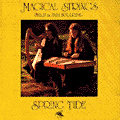

|

Spring Tide
This was the first album by Magical Strings (Philip Boulding, harp; Pam Boulding, hammered dulcimer) originally released in 1982. It features tunes from Irish tradition and by Ireland's master composer, O'Carolan, as well as several originals by the Bouldings. "...incredibly rich textures on traditional Celtic and original material played on hammered dulcimer and Celtic harp...a rich orchestral feel abounds on a medley of Irish slip jigs..."
--Victory Review
"One can almost feel the cold mist and hear the gentle wash of the waves in these haunting melodies..."
--Black Sheep Review
Philip Boulding, harp / Pam Boulding, hammered dulcimer.
|
Recordings

Spring Tide

Out of Print
|